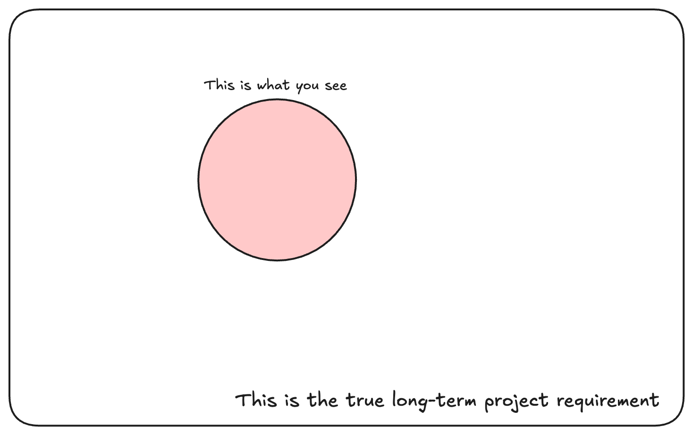
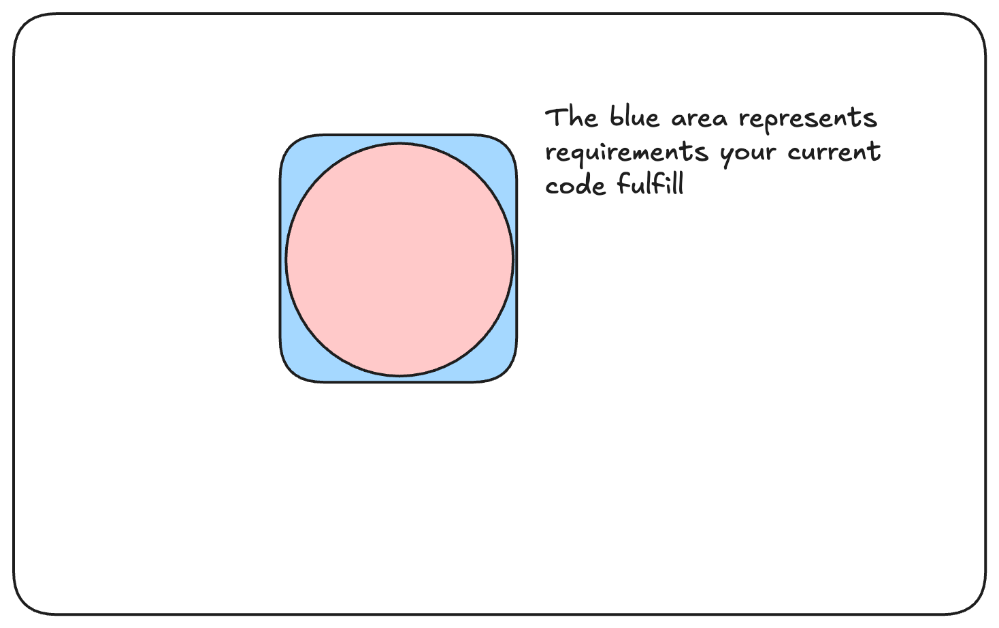
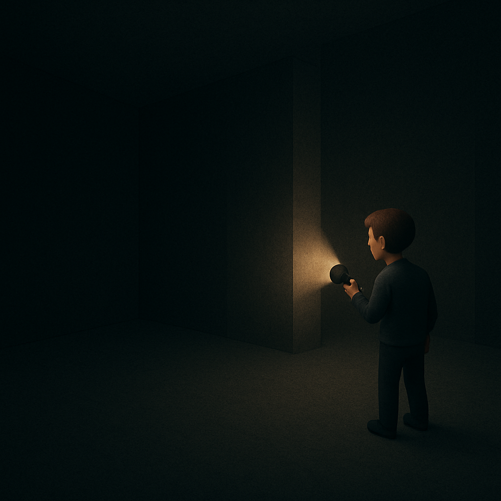

Code is not meant to be written once and never touched again. It is meant to be read, understood, and modified over time. This is especially true in dynamic environments, where requirements change, new features are added, and bugs are fixed. In such environments, code design quality is not just a nice-to-have; it is essential for the long-term success of the project.
Here, I wish to share some thoughts on code design qualities, focusing on what we want, not how to get there. This is not a guide on how to write good code but rather a reflection on what good code design means in the context of software engineering and data science. This can also be useful for managers, product owners, and stakeholders who do not code but want to understand how quality impacts the product they are building.
The key takeaway I wish you to have is that good code design is about resilience. It is about not overfitting to our myopic view of the present, but rather about crafting a solution that can adapt and generalize to future requirements, just like a good machine learning model. It is about how effortless it is to adapt to changes.
The map is not the territory
There is this nice quote from Alfred Korzybski that says “the map is not the territory”. This means that any representation of reality is not reality itself, but rather a simplification of it. Also, it is shaped by our biases and limitations.
Bringing it to the context of this post, we can say that product requirements are not the product we are building. They are a simplification of what we want to build. Naturally, details can be missing and assumptions can be wrong, because sometimes reality is more complex than what we can express in words. Sometimes, we just don’t know, and that is okay. We just have to be cautious not to mistake the empty with the void.
This idea is key to understanding what comes next. Our code is designed to solve problems, but our definitions of problems are not perfect. They are made by humans, and hence this human aspect and the imprecise understanding of what should be done is deeply connected to the quality of the code we write, even more so than what our linter and unit tests end up being.
Easy is not simple
Before using the word “simple” to describe code, we should properly define what we mean by that. As gloriously explained by Rich Hickey in his talk “Simplicity Matters,” simple is not the same as easy. Simple is about not packing together unrelated concerns; it is about giving clear responsibility to each component, and making it easy to modify and extend. Easy, on the other hand, is subjective; it is what is closer to your knowledge and experience, it is what you are used to doing, and not necessarily good. We should focus here on the code, not on our perspective of knowledge and experience.
This definition aligns with the one in the book “A Philosophy of Software Design” (Ousterhout (2018)), which is a huge inspiration and reference for this post.
Complexity is anything related to the structure of a software system that makes it hard to understand and modify the system
Complexity is not related to the number of lines or functions; it is about the bigger picture. In his book, John Ousterhout also enumerates some symptoms of complexity:
- Change amplification: when a change in one part of the system requires changes in many other parts.
- Cognitive load: when the code is hard to understand, requiring a lot of mental effort to comprehend.
- Unknown unknowns: when it is hard to diagnose where a change is needed to complete a task.
Basically, simplicity implies less effort in the long term.
Think about the code as a graph. The nodes are components (e.g., functions) we create, and the edges represent their dependencies. Simple code would be a graph with few edges, where edges represent dependencies of components on others. A dependency can be, for example, an assumption of the structure of the output of one component, the existence of certain methods, etc. The number of edges would be proportional to the complexity of the system and our cognitive load.
If we would perturb the graph above, such as changing the output of node 11, it would only affect the nodes that are directly connected to it, and not the whole graph. This is what we want to achieve with our code: a graph with few edges, where we can easily replace parts without affecting the whole system.

The objective function
Here, I’ll try to define a conceptual “objective function”—not mathematical, but rather a guiding principle that should shape how we design and structure our code.
Overfitting to training data
At first glance, you might think that code is good if it simply does what it’s supposed to do. However, this perspective often encourages quick-and-dirty solutions and spaghetti code that might solve immediate problems but overlook the bigger picture.

Imagine an abstract space of requirements, like the one above. We can only see a tiny fraction of our long-term goals clearly. Focusing too narrowly on the present moment—what we already know—makes us overfit to our current understanding, limiting our ability to adapt to new challenges. The more complex and specifically tuned code is, the more likely it is to overfit and struggle when things inevitably change.

While “easy” solutions may feel quicker and simpler initially, generalizable, well-designed solutions usually save more effort in the long run. They avoid the exponential increase in complexity and maintenance costs that come from constantly adapting overfitted solutions.

The regret
I’ve often wondered what exactly we’re optimizing for when designing and writing code. Just like machine learning models use metrics to evaluate their performance, we need something to measure code quality. After some thought, I’ve come to see regret as a useful measure.
In simple terms, regret is the extra effort spent compared to an ideal solution. This concept is borrowed from machine learning, particularly from the “multi-armed bandit” problem, where decisions must be made based on limited information. The goal there is to minimize regret—the gap between your choices and the best possible outcomes—over time. This mirrors how we write code, making choices with incomplete information and constantly adapting as we learn more.
Experienced developers naturally have lower regret because they anticipate changes more effectively, ask better questions early on, and build resilient systems from the start.

Good code starts before writing code
Since we rarely have full information upfront, we shouldn’t aim for perfect code immediately. Instead, the first thing we should do is ask questions:
- What requirements are likely to change?
- What requirements are unlikely to change?
- What assumptions are we making?
- What is the expected lifespan of the product?
With the answers to these questions, we can start shaping our design. Once we have a draft proposal, we can evaluate how different possible future changes would affect the current structure.

Designing often involves identifying stable components and defining contracts between them. Asking the right questions early helps us group functionalities meaningfully and build systems that remain flexible over time.
Avoid premature optimization
While it’s important to anticipate change, guessing too far ahead about possible future requirements can be dangerous. This is known as premature optimization. It can create significant regret—first due to excessive effort upfront, and later because reality rarely matches our early guesses.

I once found myself in this trap: trying to optimize a codebase that wasn’t even in production yet. I went deep into SOLID principles, endlessly splitting functions and abstracting for flexibility I thought I might need later. But those future requirements never arrived. The code became so abstract that it was hard to maintain, and when real changes eventually came, I had to rewrite everything anyway.
Conclusion
Writing good code isn’t just about making something that works today — it’s about building solutions that can adapt, evolve, and scale as requirements inevitably change. Much like training a machine learning model, if we overfit our code to the present, we may pay a heavy price in the future. Balancing simplicity, flexibility, and pragmatism is what leads to resilient systems with low long-term maintenance cost.
By focusing on minimizing regret—the extra effort caused by early design decisions that don’t age well—we can make smarter choices even when information is incomplete. And while experience helps us make better bets, asking the right questions early on dramatically increases our odds of success.
In the end, it’s not about writing perfect code — it’s about writing code that can gracefully survive its own future.
Key Takeaways
- Code quality is about resilience, not just correctness
- Overfitting code to today’s requirements creates fragile systems.
- Minimize regret: optimize for adaptability, not hypothetical future needs.
- Good design starts with asking the right questions, not jumping into abstractions.
References
Ousterhout, John K. 2018. A Philosophy of Software Design. Vol. 98. Yaknyam Press Palo Alto, CA, USA.